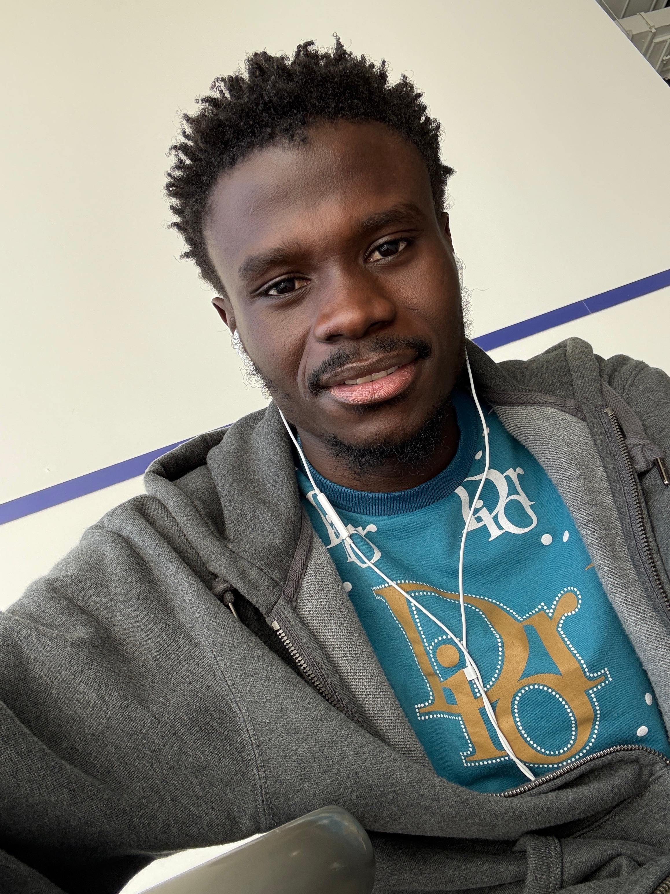
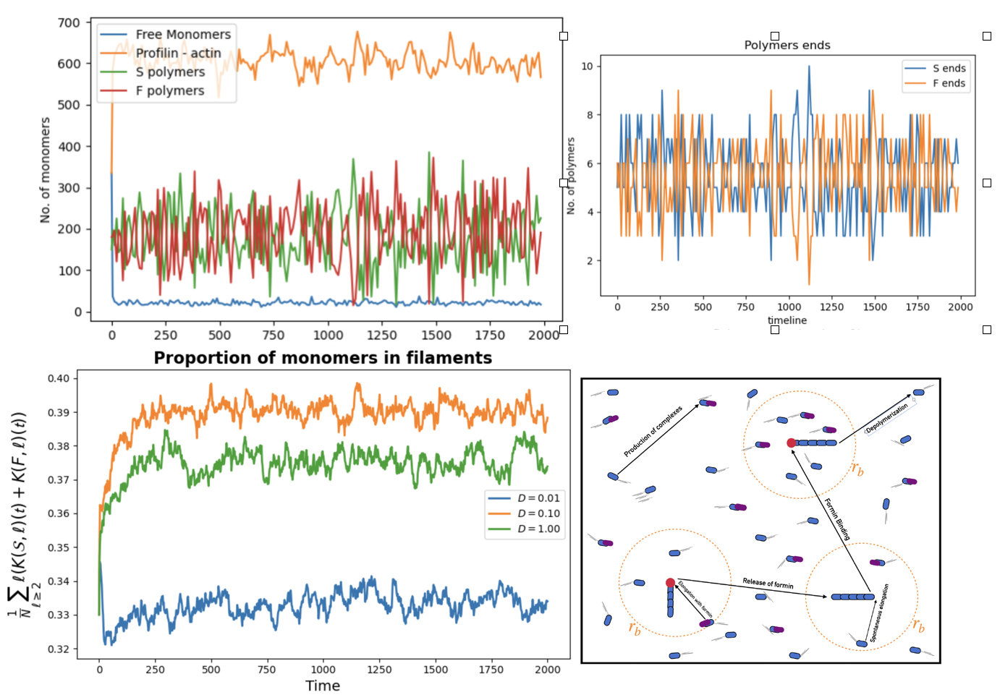
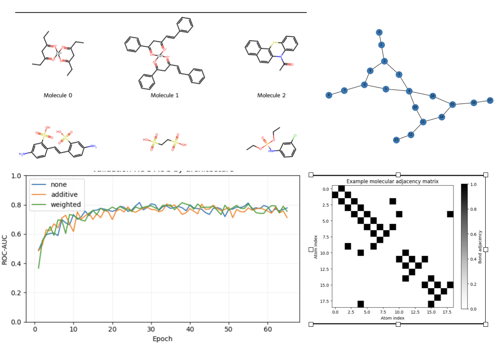
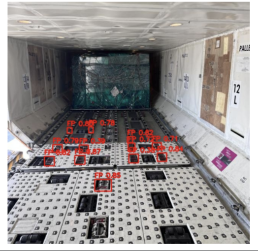
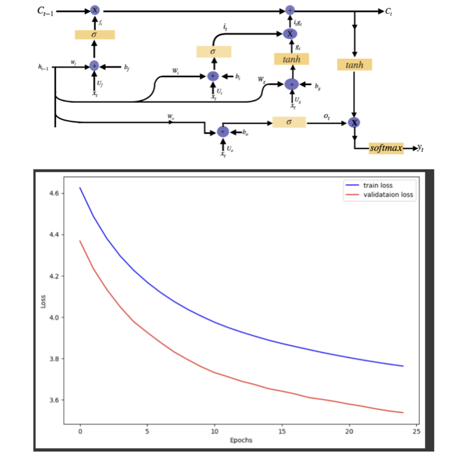

Paul Sanyang
I am a master's graduate with training in probability theory, stochastic modeling, and machine learning.
I hold an MSc in Mathematics-Probability Theory from Concordia University and an Msc in Mathematical Sciences-Machine Learning through the African Master's in Machine Intelligence (AMMI) program at the African Institute for Mathematical Sciences (AIMS).

Research Interests
My research interests include but not limited to:
Graph Neural Networks • Stochastic Processes • Probability Theory • Computer Vision • Scientific Machine Learning • Application of Machine Learning to Health, Finance and Education
Selected Research & Projects

Spatial Stochastic Modeling of Actin Polymerization
MSc thesis, Concordia University
Spatial stochastic simulations incorporating Brownian diffusion and local interactions, with deterministic approximations and comparisons of polymerization dynamics.
Research summary and figures forthcoming.

Graph Neural Networks for Molecular HIV Prediction
MSc thesis, African Master's in Machine Intelligence (AMMI), AIMS
Implemented and evaluated graph convolutional networks for molecular property prediction, including an investigation of edge features.
Supervised by Romain Menegaux

Aircraft Cargo-Lock Detection with YOLOv5
Fifteenth Montreal Industrial Problem Solving Workshop, Centre de recherches mathématiques (CRM), Montréal, Canada
Fine-tuned YOLOv5 for aircraft cargo-lock detection, evaluated predictions, investigated false positives, and explored model interpretation using Grad-CAM.

Mathematical Foundations and Applications of Transformer Models: Enhancing Sequence Learning Beyond RNN and LSTM Architectures
Machine learning and sequence modeling project
Exploration of the mathematical foundations of Transformer architectures and their application to sequence learning, with attention to how attention-based approaches differ from recurrent models.
Selected Teaching Experience
Course Instructor
Concordia University · 2024
- MATH 203 — Differential & Integral Calculus: Taught undergraduate students.
Teaching Assistant
Concordia University · 2024–2026
- MAST 232 — Mathematics with Computer Algebra
- MATH 203 — Differential & Integral Calculus
- MATH 209 — Fundamental Mathematics II
- MAST 387 — Data Science Lab
Statistics Lab Tutor
Concordia University, Department of Psychology · 2025–2026
- PSYC 315 — Statistical Analysis I: Tutored students in statistical analysis.